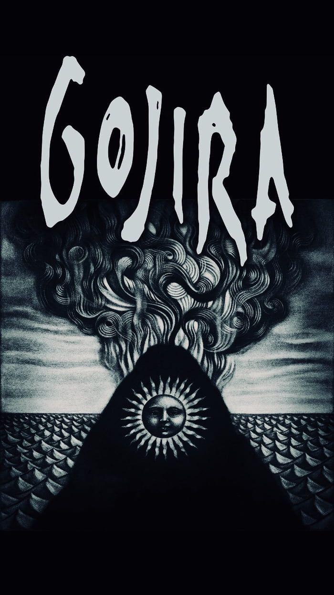

Gojira tends to operate in polar extremes. “I can’t help but see humanity as a parasite,” Gojira’s co-founding guitarist and principal songwriter Joe Duplantier explains, “and yet the most beautiful things come out of humans.” To that end, the French quartet—Duplantier and his brother Mario [drums], Christian Andreu [guitar], and Jean-Michel Labadie [bass]—have spent the past 15 years translating this duality into a distinctive sound: dark, crushing metal brightened by triumphant arena-rock melodies, contrast-heavy and emotionally charged. Enter 2016's Magma, whereupon Gojira found strength—and crossover success—through a singular commitment to self-reflection. The intensely personal record, penned in memory of the Duplantier brothers' late mother, was a painful significant turning point for the French group. It debuted at No. 24 on the Billboard 200 chart, topped the Billboard “Hard Rock Albums” chart (a first for a French band), and netted nominations for Best Rock Album and Best Metal Performance (for "Silvera") at the 59th annual Grammy Awards. Numerous global headlining tours, including a stint with Metallica, followed. Coming out of Magma, Gojira weren't just one of the biggest metal bands on the scene—they were one of biggest rock bands in the world, unified